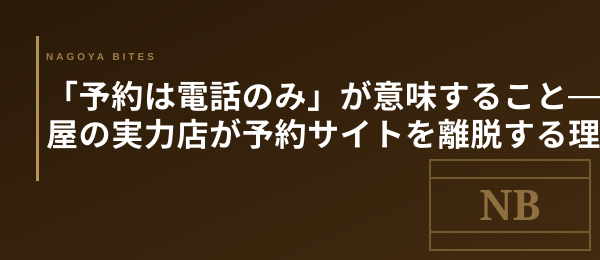

🗝 業界の裏側コラム
「予約は電話のみ」が意味すること — 名古屋の実力店が予約サイトを離脱する理由
食べログ・ホットペッパー・Retty のいずれにも掲載されていないのに、3か月先まで満席が続く名古屋の名店がある。「電話でのみ予約を受け付けます」という一行が、実は経営上の最も合理的な判断であることを、業界の内側から読み解く。

① プラットフォームが抜く手数料
まず数字の話から始めよう。ホットペッパーグルメの予約手数料は1名あたり220円（税込）が基本だ。カウンター12席の店で1日2回転、月20日営業すれば480名分の予約が発生する。220円×480名で月105,600円。年間で換算すると127万円が手数料として飛ぶ計算になる。
食べログネット予約は1件につき100〜200円、加えて「ゴールド」などの月額プランが数万円かかる。これに広告掲載料や写真掲載オプションを重ねると、月30〜50万円をプラットフォームに支払う名店も珍しくない。
客単価15,000円の12席店で月間売上が約450万円だとすると、プラットフォームコストは売上の7〜10%に達する。利益率10〜15%のフルサービスレストランにとって、これは経常利益の半分以上が外部に流れる計算だ。「電話のみ」に切り替えた途端、収益構造が劇的に改善するのは数字が示す通りだ。
② 「知らない客」を入れないというフィルター
経済合理性だけが理由ではない。電話予約には、プラットフォームにはないフィルター機能がある。
ネット予約では、店の雰囲気も料理のスタイルも知らない客が「近所だから」「割引クーポンがあるから」という理由で予約を入れてくることがある。こういった客は料理の価値を正しく評価せず、「コスパが悪い」「敷居が高い」という低評価レビューを残す確率が上がる。
電話だと、まず店名を知らなければ番号に辿り着けない。電話をかける行為自体が、ある程度の積極性と事前調査を示す。口頭で「コース内容と価格帯はご確認いただいておりますか？」と一言確認できるし、「この日は少人数のみ受け付けています」という細かい制御も即座にできる。店にとって電話は、顧客の質を担保するための装置でもある。
③ 評価の最終コントロール権を手放さない
プラットフォーム依存の最大のリスクは、食べログのスコアが一夜で変動するリスクだ。業界では「★0.2下がったら売上が20%落ちた」という話が冗談交じりに語られる。
食べログのアルゴリズムは非公開だ。口コミの削除・復活、スコアの急変など、店側にはコントロールできない要素が多すぎる。自分たちの評価を第三者の評価システムに全面的に委ねることへの不信感が、離脱の遠因になっているケースも多い。
一方、電話予約と自前の台帳で回している店は、紹介制やリピーター制を組み合わせることで、客の層を自ら設計できる。「うちの料理を本当に理解してくれる人にだけ来てほしい」という意思表示が、プラットフォーム離脱という形で現れている。
Inside Perspective — 業界人の目線
- 月30〜50万円のプラットフォームコストは、12席店の利益の過半数に相当する。「電話のみ」への切替は単なる節約ではなく、収益構造の根本的な再設計
- 電話予約には「知らない客を入れない」フィルター効果がある。レビューの質とリピーター比率が上がり、結果として評価が安定する
- 食べログのアルゴリズム依存は経営リスク。評価の最終コントロール権を手放さないために離脱する店が増えている
- 名古屋では「紹介がないと入れない」「常連からの口コミだけで満席」という店が栄・覚王山エリアを中心に20〜30軒あると業界では言われている
電話のみの店を見つけるには
逆説的だが、「食べログに載っていない」ことが実力店のシグナルになる時代が来ている。業界人に「最近どこ行った？」と聞くと、出てくるのは検索しても出てこない店の名前だったりする。
NAGOYA BITES がデータベースに手動キュレーション枠を設けているのも、こういった理由だ。プラットフォームに登録していない店を、業界人の紹介・口コミ・メディア掲載履歴の三軸で発見・掲載する。食べログに載っていることと「良い店」であることは、今や完全には一致しない。